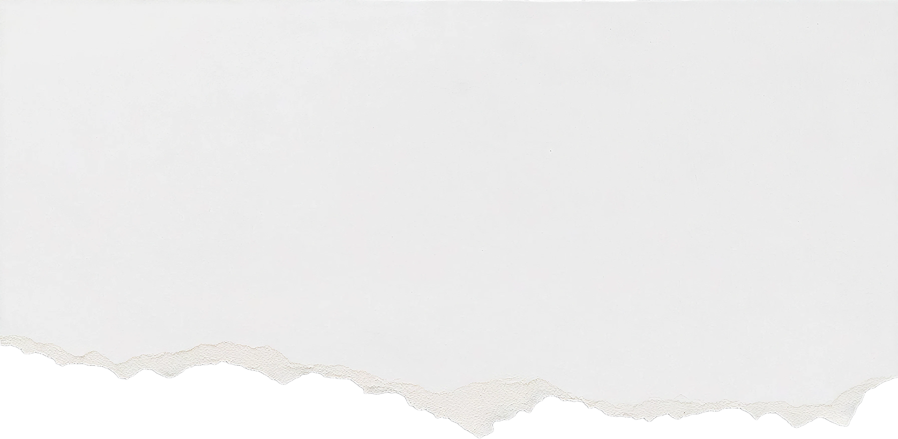

@@include('./partials/global/head.html', {
"page": {
"title": "Ошибка 404 — Страница не найдена",
"css": "./css/no-found.css"
}
})
@@include('./partials/global/header.html')

Такой страницы
не существует
На главную
@@include('./partials/global/cookie.html')
@@include('./partials/global/footer.html')
@@include('./partials/global/scripts.html')